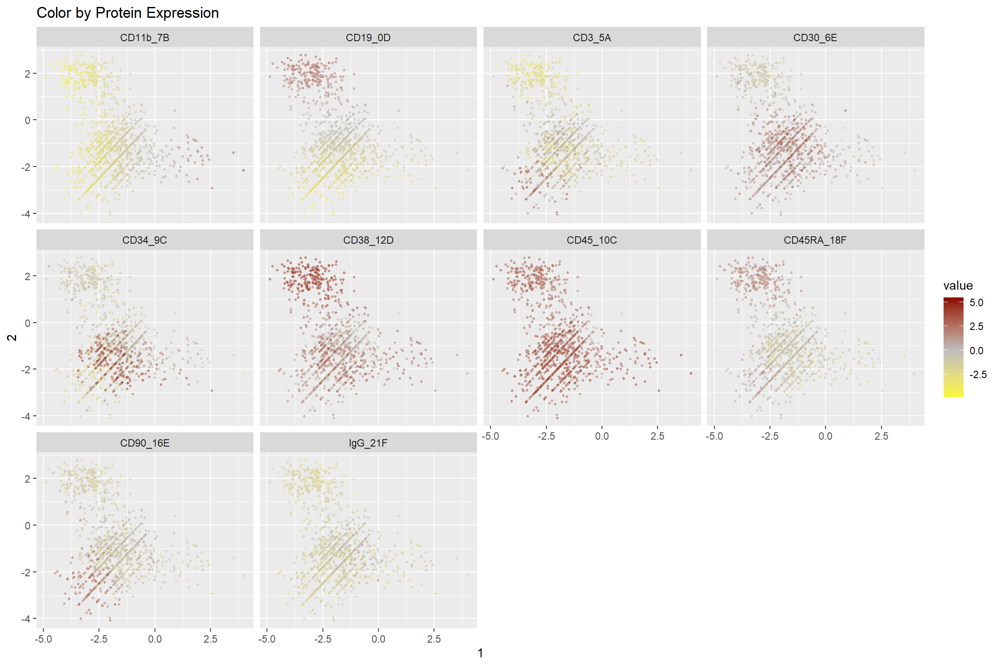
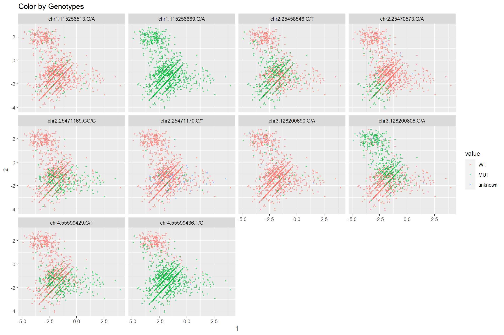

loading_data.RmdEnable loading from various files.
Work for DNA only. Only single sample, since loom files only contain 1 sample.
filename <- system.file("extdata", "PE11.cells.loom", package = "TapestriR") variants = read_loom(filename,min_mutation_rate = 0.05) filtered_variants = filter_variants(variants)
## Warning in filter_variants(variants): this method will not return identical
## results to Tapestri Insights. Export filtered results from Tapestri Insights or
## use the Tapestri SDK to filter before importing into R.vaf=round(filtered_variants@data_layers$AD/filtered_variants@data_layers$DP, 3) vaf[is.na(vaf)] <- 0 filtered_variants = add_data_layer(filtered_variants,'VAF',vaf) filtered_variants
## Formal class 'Tapestri_Assay' [package "TapestriR"] with 6 slots
## ..@ assay_name : chr "dna"
## ..@ metadata :List of 1
## .. ..$ cell_info: tibble [1 × 2] (S3: tbl_df/tbl/data.frame)
## ..@ feature_annotations: tibble [8 × 11] (S3: tbl_df/tbl/data.frame)
## ..@ cell_annotations : tibble [5,043 × 3] (S3: tbl_df/tbl/data.frame)
## ..@ data_layers :List of 6
## .. ..$ NGT: tibble [5,043 × 8] (S3: tbl_df/tbl/data.frame)
## .. ..$ AD : tibble [5,043 × 8] (S3: tbl_df/tbl/data.frame)
## .. ..$ DP : tibble [5,043 × 8] (S3: tbl_df/tbl/data.frame)
## .. ..$ GQ : tibble [5,043 × 8] (S3: tbl_df/tbl/data.frame)
## .. ..$ RO : tibble [5,043 × 8] (S3: tbl_df/tbl/data.frame)
## .. ..$ VAF: tibble [5,043 × 8] (S3: tbl_df/tbl/data.frame)
## ..@ analysis_layers : list()Works for DNA, DNA + Protein data. Also works from multisample. best practice is to create a multiassay, multisample h5 in pipeline, and apply filters before loading into R.
usage:
filename <- system.file("extdata", "ABseq021.h5", package = "TapestriR") experiment = read_tap(filename) # ideally would just start by loading filtered H5, but for now will load data with some basic filters filtered_variants = filter_variants(experiment$assays$dna)
## Warning in filter_variants(experiment$assays$dna): this method will not return
## identical results to Tapestri Insights. Export filtered results from Tapestri
## Insights or use the Tapestri SDK to filter before importing into R.vaf=round(filtered_variants@data_layers$AD/filtered_variants@data_layers$DP, 3) vaf[is.na(vaf)] <- 0 filtered_variants = add_data_layer(filtered_variants,'VAF',vaf) #add the filtered data back to experiment, this will subset the rest of the assays to make sure we have same cells experiment = add_assay(experiment,filtered_variants, keep_common_cells = TRUE) # normalize using clr method protein_counts_norm = experiment$assays$protein$data_layers$read_counts %>% clr_by_feature() %>% as_tibble(rownames = NA) # add normalized data to protein assay experiment$assays$protein = add_data_layer(experiment$assays$protein,'normalized',protein_counts_norm) normalized_dna_reads = normalize_dna_reads(experiment$assays$cnv$data_layers$read_counts) experiment$assays$cnv = add_data_layer(experiment$assays$cnv,'normalized',normalized_dna_reads) experiment
## Experiment: ABseq021.h5
## Num Cells: 1197
## Formal class 'Tapestri_Assay' [package "TapestriR"] with 6 slots
## ..@ assay_name : chr "cnv"
## ..@ metadata :List of 1
## ..@ feature_annotations: tibble [138 × 1] (S3: tbl_df/tbl/data.frame)
## ..@ cell_annotations : tibble [1,197 × 3] (S3: tbl_df/tbl/data.frame)
## ..@ data_layers :List of 2
## ..@ analysis_layers : list()
## Formal class 'Tapestri_Assay' [package "TapestriR"] with 6 slots
## ..@ assay_name : chr "dna"
## ..@ metadata :List of 1
## ..@ feature_annotations: tibble [49 × 6] (S3: tbl_df/tbl/data.frame)
## ..@ cell_annotations : tibble [1,197 × 3] (S3: tbl_df/tbl/data.frame)
## ..@ data_layers :List of 6
## ..@ analysis_layers : list()
## Formal class 'Tapestri_Assay' [package "TapestriR"] with 6 slots
## ..@ assay_name : chr "protein"
## ..@ metadata :List of 1
## ..@ feature_annotations: tibble [10 × 1] (S3: tbl_df/tbl/data.frame)
## ..@ cell_annotations : tibble [1,197 × 3] (S3: tbl_df/tbl/data.frame)
## ..@ data_layers :List of 2
## ..@ analysis_layers : list()In case you want to build a multiomics object from individual components, not using the read_tap function.
ASSAY_NAME_VARIANT = 'dna' ASSAY_NAME_PROTEIN = 'protein' filename <- system.file("extdata", "ABseq021.h5", package = "TapestriR") # ideally would just start by loading filtered H5, but for now will send filtering list to function to mimic variants = read_assay_h5(filename = filename, assay_name = ASSAY_NAME_VARIANT, min_mutation_rate = 0.005) filtered_variants = filter_variants(variants)
## Warning in filter_variants(variants): this method will not return identical
## results to Tapestri Insights. Export filtered results from Tapestri Insights or
## use the Tapestri SDK to filter before importing into R.vaf=round(filtered_variants@data_layers$AD/filtered_variants@data_layers$DP, 3) vaf[is.na(vaf)] <- 0 filtered_variants = add_data_layer(filtered_variants,'VAF',vaf) ### load protein assay and normalize protein = read_assay_h5(filename = filename, assay_name = ASSAY_NAME_PROTEIN) # normalize using clr method protein_counts_norm = protein@data_layers$read_counts %>% clr_by_feature() %>% as_tibble(rownames = NA) # add normalized data to protein assay protein = add_data_layer(protein,'normalized',protein_counts_norm) ### create multiomics object (moo) experiment = create_moo(experiment_name = basename(filename), cell_annotations = filtered_variants@cell_annotations) experiment = add_assay(moo = experiment,assay = filtered_variants) experiment = add_assay(experiment,protein, keep_common_cells = TRUE) experiment
## Experiment: ABseq021.h5
## Num Cells: 1198
## Formal class 'Tapestri_Assay' [package "TapestriR"] with 6 slots
## ..@ assay_name : chr "dna"
## ..@ metadata :List of 1
## ..@ feature_annotations: tibble [49 × 6] (S3: tbl_df/tbl/data.frame)
## ..@ cell_annotations : tibble [1,198 × 3] (S3: tbl_df/tbl/data.frame)
## ..@ data_layers :List of 6
## ..@ analysis_layers : list()
## Formal class 'Tapestri_Assay' [package "TapestriR"] with 6 slots
## ..@ assay_name : chr "protein"
## ..@ metadata :List of 1
## ..@ feature_annotations: tibble [10 × 1] (S3: tbl_df/tbl/data.frame)
## ..@ cell_annotations : tibble [1,198 × 3] (S3: tbl_df/tbl/data.frame)
## ..@ data_layers :List of 2
## ..@ analysis_layers : list()################## # select the Proteins to plot on X and Y ################## #protein_x = 'CD34' #protein_y = 'CD38' protein_x = 1 protein_y = 2 ################## # select 1 or more features to color by # color_by should be a vector of column header you want to color by ################## #all proteins color_by = experiment$assays$protein$data_layers$normalized #select a few proteins #color_by = experiment$assays$protein$data_layers$normalized %>% select('CD110','CD117') #select a few variant #color_by = experiment$assays$dna$data_layers$NGT %>% select(1:10) %>% mutate_all(as_factor) %>% mutate_all(recode_genotypes) p = tapestri_scatterplot(x = experiment$assays$protein$data_layers$normalized[[protein_x]], y= experiment$assays$protein$data_layers$normalized[[protein_y]], color_by = color_by)+ scale_colour_gradient2(low="yellow", mid='grey', high="darkred") p = p + xlab(protein_x) + ylab(protein_y) + ggtitle('Color by Protein Expression') p

#select a few variant color_by = experiment$assays$dna$data_layers$NGT %>% select(1:10) %>% mutate_all(as_factor) %>% mutate_all(recode_genotypes)
## Warning: Unknown levels in `f`: 2## Warning: Unknown levels in `f`: 3## Warning: Unknown levels in `f`: 2p = tapestri_scatterplot(x = experiment$assays$protein$data_layers$normalized[[protein_x]], y= experiment$assays$protein$data_layers$normalized[[protein_y]], color_by = color_by) p = p + xlab(protein_x) + ylab(protein_y) + ggtitle('Color by Genotypes') p

Work for DNA only. Export can be from a multisample project in Tapestri Insights. usage:
NGT.csv and Variants.csv filesTapestri_Assay objectexport_dir <- system.file("extdata", "insights_2.2_export", package = "TapestriR") #show files dir(export_dir)
## [1] "AF.csv" "DP.csv" "GQ.csv" "NGT.csv" "README.txt"
## [6] "Variants.csv"variants = read_insights_export(export_dir = export_dir)
## Parsed with column specification:
## cols(
## .default = col_double(),
## Sample = col_character()
## )## See spec(...) for full column specifications.## Parsed with column specification:
## cols(
## .default = col_character(),
## DANN = col_double(),
## `Allele Freq (gnomAD)` = col_double(),
## Whitelist = col_logical()
## )## See spec(...) for full column specifications.variants## Formal class 'Tapestri_Assay' [package "TapestriR"] with 6 slots
## ..@ assay_name : chr "variants"
## ..@ metadata :List of 1
## .. ..$ cell_info: tibble [4 × 2] (S3: tbl_df/tbl/data.frame)
## ..@ feature_annotations: tibble [23 × 24] (S3: spec_tbl_df/tbl_df/tbl/data.frame)
## ..@ cell_annotations : tibble [30,070 × 3] (S3: tbl_df/tbl/data.frame)
## ..@ data_layers :List of 4
## .. ..$ NGT: tibble [30,070 × 23] (S3: tbl_df/tbl/data.frame)
## .. ..$ AF : tibble [30,070 × 23] (S3: tbl_df/tbl/data.frame)
## .. ..$ DP : tibble [30,070 × 23] (S3: tbl_df/tbl/data.frame)
## .. ..$ GQ : tibble [30,070 × 23] (S3: tbl_df/tbl/data.frame)
## ..@ analysis_layers : list()